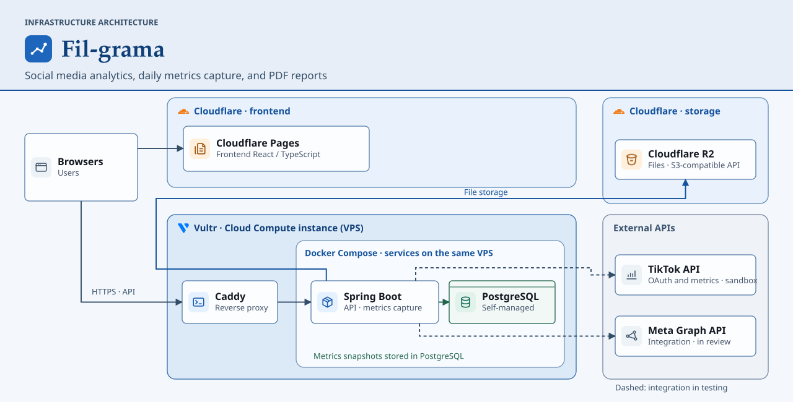
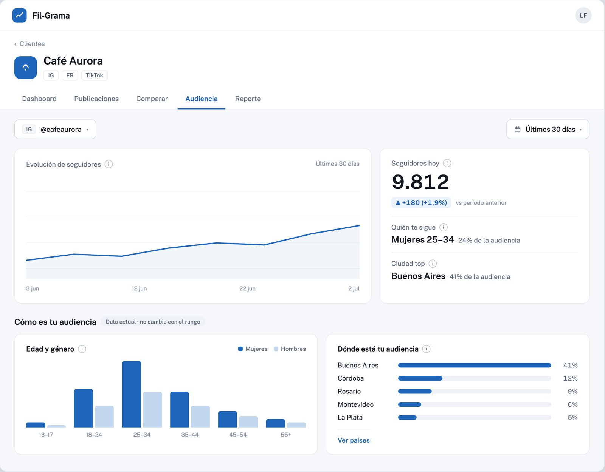
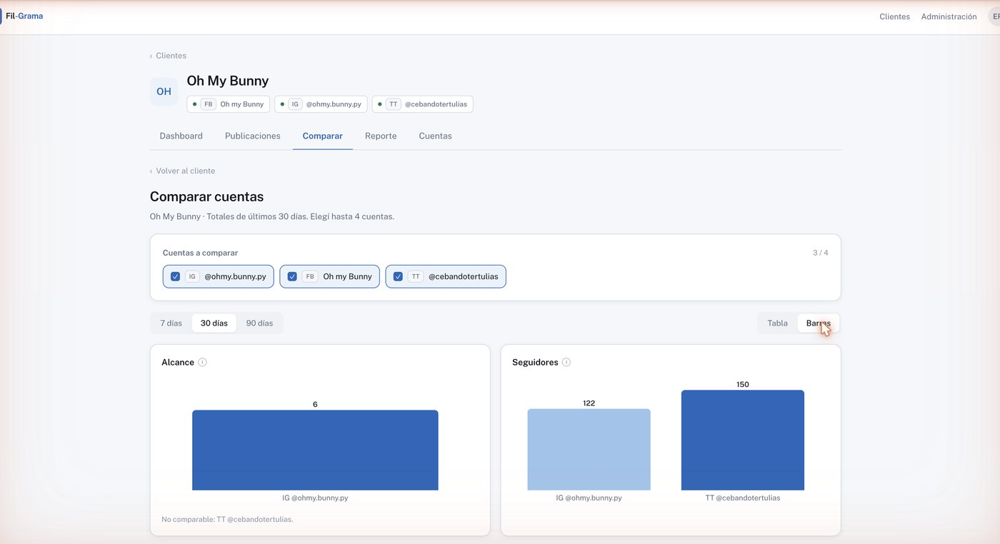

Fil-Grama
Social media analytics for agencies. Instagram, Facebook and TikTok in one place, with the history the networks don't keep for you.
The three networks only hand back a short window of account metrics, roughly the last month. So Fil-Grama has a job that runs every morning, asks each connected account for its numbers and writes them into its own database. Whatever doesn't get saved that day is gone: the API won't return it later. The dashboards, the comparison between accounts and the PDF reports all read from that saved history.
I did the data model and the architecture, designed the 50 screens from wireframe to high fidelity, wrote backend and frontend, built the TikTok and Meta integrations, and I run the infrastructure and the deploys.
01Why I built Fil-Grama
An agency with five or six clients needs to compare accounts and see how each one moved over the months. The networks don't help there: every API gives a limited window and past that the data is simply not available. Without a capture process of your own, that history never exists.
Fil-Grama saves it day by day — reach, followers, interactions, engagement, per account, in its own tables. That's what the dashboards, the account comparison and the reports read from.
What the API returns, and what Fil-Grama kept
Same account, same metric. The difference is whether somebody was writing it down.
The eleven months on the left are there because the job saved them. If I started the project today, that stretch would stay blank and there's no way to fill it in later.
02The morning round
One pass per account, once a day, six in the morning Asunción time. Every result gets written down, the failures too: which account, which error, at what time. An account that fails doesn't get retried in a loop; it's recorded in sync_account_results and the run keeps going.
03Modular backend, contract as the source of truth
Backend in Java with Spring Boot, split by domain: auth, clients, accounts, OAuth, Meta integration, metrics, sync, reports, media, storage. Postgres with versioned migrations. The React frontend doesn't hand-write its calls to the API — they're generated from the contract with Orval, so a change in the backend shows up as a type error while I'm working and not as a bug in production.
Refresh token rotation
If a stolen refresh token gets reused, the whole family goes down, not just that token.
Data model — core
There are 14 tables in the schema. This is the part the dashboard and the daily job depend on.
04Backend details
- 001167+ testsIncludes e2e against a real Postgres with Testcontainers, not only mocks. They take longer to run and they caught things mocks never would have.
- 002Refresh tokens with rotationIf a stolen token gets reused, I detect it and revoke the whole family, not just that token.
- 003OAuth tokens encrypted at restAES-GCM. They never sit in the database in plain text and they never come back out through the API.
- 004Errors in RFC 7807One exception handler, the same
problem+jsonshape everywhere. The frontend reads one format and nothing else. - 005Multi-tenant from the model14 tables with
client_id. It took me a few passes to get the model right, and it's the reason going SaaS doesn't mean rewriting it.
05TikTok and Meta, real status
Both integrations are written. Neither one is running against real client accounts yet, and the reason is different in each case.
OAuth end to end with PKCE, token refresh with rotation, and a QR flow for connecting an account. It's the one I tested from top to bottom, from authorizing to reading metrics. Publishing needs a separate audit from TikTok that I haven't asked for yet.
The code is there, OAuth and metrics reading, but Meta asks for App Review with Advanced Access plus business verification before you can touch real accounts. Today it runs in Development mode with my own test accounts. What's missing is the paperwork, not the code.
06Where it stands
There are no clients in production yet. I'd rather have the base settled before someone else's data lives in there: integrations enabled, a boring deploy, backups I actually restored. Next one up is Meta approved.
07How it's deployed
I rented the server, wired the connections and deployed both halves myself: backend on a Vultr VPS, Docker Compose behind Caddy with Postgres, and frontend on Cloudflare Pages, which redeploys on every push to main.

For development I open a Cloudflare tunnel to the local backend, so I test against a real domain without exposing my machine. Backups run and every so often I restore one: a backup you never tested isn't a backup. This page has no IPs, credentials, tokens or internal URLs.
08The screens, browsable
A selection out of the 50 screens I designed: analytics, comparison between accounts, posts, reports, platform. Each card opens the real screen, desktop and mobile.
From wireframe to high fidelity
The same screen, Audience, before and after the visual pass.


09Screenshots of it running
The app in production, not mockups: the client dashboard, a post in detail, the comparison between accounts, and the report generator that exports to PDF.




The screenshots come from Oh My Bunny, my own venture. I use it as a real test account while Meta's approval moves along. The numbers are small because the account is small and was connected recently.
10Tech inventory
Backend
- Java · Spring Boot
- REST APIs · JWT
Data
- PostgreSQL · Flyway
- Relational modeling
Frontend
- React 19 · TypeScript
- Vite · TanStack Query
Integrations
- OAuth 2.0 · PKCE
- TikTok API · Meta Graph API
Infrastructure
- Vultr VPS · Docker Compose
- Caddy · Cloudflare Pages · R2
AI
- Embedded MCP server
- Read-only tools over reports